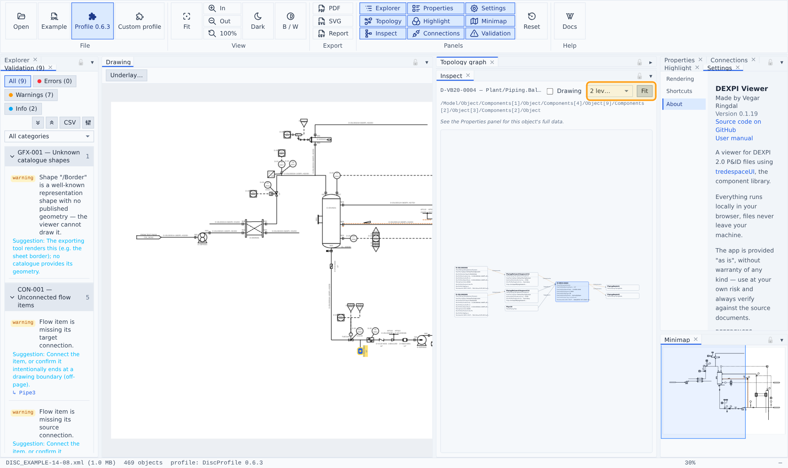
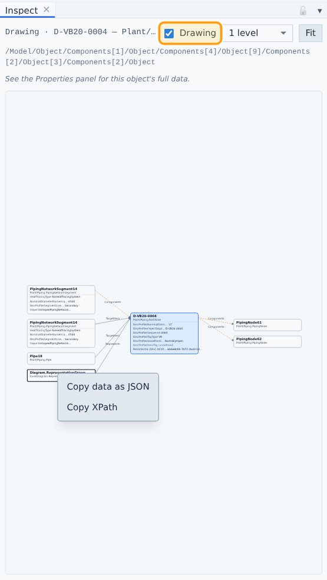

Inspect panel
A UML-style instance diagram of the selected object — the debug view for "how is this connected", without reading raw XML.

The center card shows the object's complete raw data — every property, including ones carrying
<Undefined/>values (shown dimmed, never hidden).Neighbor cards show every relation with the edge labeled by the actual property name: outgoing References (right), reverse referenced-by and the containment parent (left), component children, and DISC-profile instance stubs (violet) carrying the published instance's data.
The depth selector (1–3 levels) chains incoming relations leftward and outgoing rightward.
Click a neighbor to re-center on it — the clicked card's position is pinned so the view never jumps; the global selection follows.
Problems show structurally, in red: a finding that names a property becomes a red row — a red
(missing)row for a property that should be there, or the existing row turned red when its value is invalid — with the full finding message in the row's tooltip. Cards keep their severity-colored border; only findings that don't map to a property (unknown class, connectivity, …) remain as compact ⚠ rows. An unresolvable reference target renders as a fully red broken card with a red edge.
Drawing toggle adds the drawing side of the file to the diagram: representation groups, labels, shapes, polylines. Drawing objects carry no ids in real files, so their positional XPath stands in as the identity, and their cards render with a dashed border — they never feed the plant-data views. A plant object then shows its
Representsgroup as an incoming neighbor; clicking drawing cards re-centers within Inspect only, since nothing else in the app can address them. The header saysDrawing ·while the mode is on, shows the centered object's full XPath (it pastes straight intoxmllint --xpath), and a hint line says where the rest of the data lives — the Properties panel for plant objects, Inspect itself for drawing-side ones.Right-click any card for the copy menu: Copy data as JSON puts the object's complete raw data on the clipboard — every typed value, nested aggregates, multi-valued properties as arrays, references and components recursively, nothing folded into display strings — and Copy XPath copies the element's positional path. Rows that don't fit the card show their full value in a tooltip.